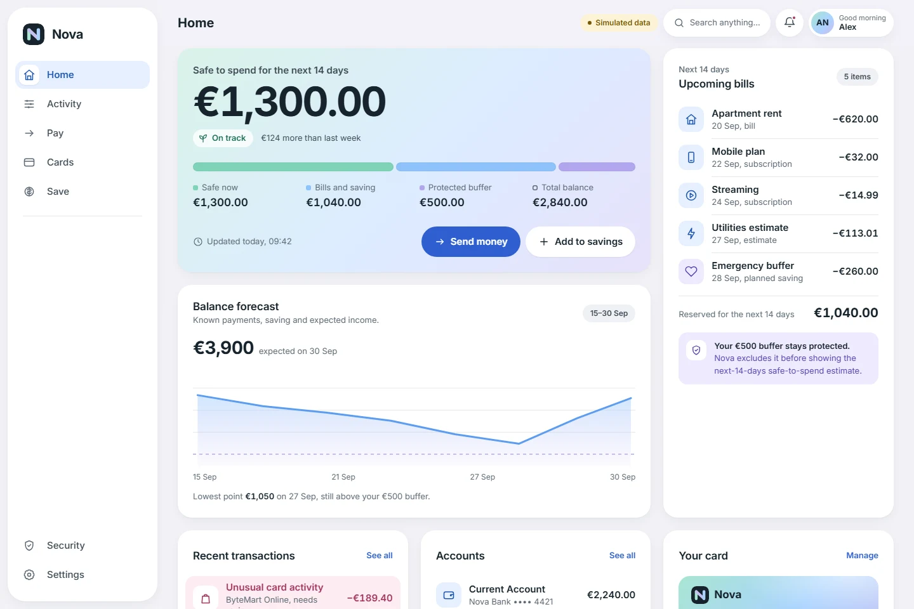
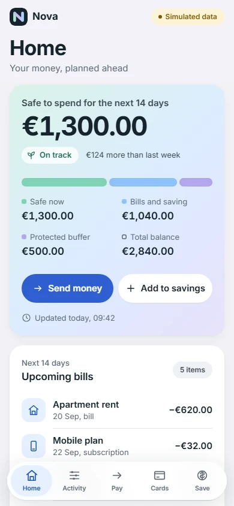

FINANCIAL DECISION UX · SAFE-TO-SPEND · RECOVERY
Nova
A personal-finance concept built around one question: what money is actually safe to spend after upcoming obligations and a protected buffer?

Make spending confidence explainable.
A positive balance can hide upcoming bills and protected savings. I designed a simulated personal-finance prototype that brings those commitments into the decision, then used two research rounds to identify where the explanation still failed.
- My contribution
- Problem framing, UX/UI, interaction states and front-end prototype.
- Research
- 10 async self-report records across two rounds; five new participants in Round 02.
- What I learned
- Transfer arithmetic was clearer in the retest responses. Buffer rules, horizon and recovery still needed work.
Independent concept. All banking actions are simulated. These self-reports are not observed task-success rates or evidence of business impact.
Add context without adding a full planner.
Bring obligations beside the balance
I selected Balance + Money Horizon over a balance-only dashboard. A full cash-flow planner offered depth but added too much work to the home screen.
Explain the transfer before confirmation
Show before → amount → fee → after, with the protected buffer kept separate. This trades a little speed for a clearer consequence.
Make protection reversible
Connect unusual activity to evidence, freeze and unfreeze. Insufficient funds, offline states and authentication failure need clear next steps too.
One decision surface, across devices.
The prototype brings balance, commitments and the buffer together. These screenshots show the public interface; the historical research build is identified separately below.

Two rounds. Four questions still open.
- Round 01 · 5 participants
Locate the comprehension risks
Self-reports raised questions about demo versus real actions, transfer impact, the forecast window and failure recovery.
- First iteration
Change the decision points
Revise action labels, transfer arithmetic, the horizon label and recovery reassurance. The retest below relates to this iteration.
- Round 02 · 5 new participants · 30 Sep 2026
Retest the revised prototype
All five explained the transfer arithmetic. Only one understood the protected-buffer rule; two identified the 14-day horizon, and two understood that no money moved after failure.
No-money-moved clarity was reported by 4/5 in Round 01 and 2/5 in Round 02. Different small samples make this a directional self-report signal, not evidence that the interface caused a regression. All four findings remain open.
Round 02 tested build 5c457075. Zero moderated sessions. No broad usability improvement is claimed.
Prioritize the consequence of misunderstanding.
The next research priority is recovery: make “no money moved” unmistakable before asking someone to retry. Then test the demo boundary, protected-buffer explanation and horizon language on a recorded build.
I would keep the useful transfer breakdown and test the unresolved rules with the same tasks. Changes after the Round 02 build need their own evaluation; these results do not validate the latest public prototype.
Project context & validation criteria
What I owned, chose, traded off — and what is still unknown
Detailed project context, decisions and evidence limits.
Product design · UX/UI · prototype
Independent project; no separate PM, engineering or stakeholder team is documented in this public case.
False confidence
Balance-first dashboard; Balance + Money Horizon; full cash-flow planner.
Balance + Money Horizon — Pairs immediate money state with a compact forward view and explicit buffer.
Richness vs load / Speed vs safety / Protection vs friction / Confidence vs certainty
Implementation reality: Implemented, simulated banking. Technical boundary is documented; separate engineering-team collaboration is not verified unless stated elsewhere.
Local component, state or system implications are documented in the case; downstream production impact is not measured.
The first iteration did not resolve comprehension risks. No-money-moved clarity was reported by 2/5 in Round 02 versus 4/5 in Round 01; these are different small samples, not a causal effect.
VERIFIED ASYNC SELF-REPORT / TWO ROUNDS. Five participants in Round 01 and five new participants in Round 02. Zero moderated sessions. Four findings remain open.
Prioritize recovery clarity, sensitive-action boundaries, the protected-buffer rule and the 14-day horizon. Test the next iteration on a recorded build.
Success criteria before success claims
≥ 4/5 participants correctly identify safe-to-spend money without moderator assistance. This is a decision threshold for future validation, not a measured outcome.